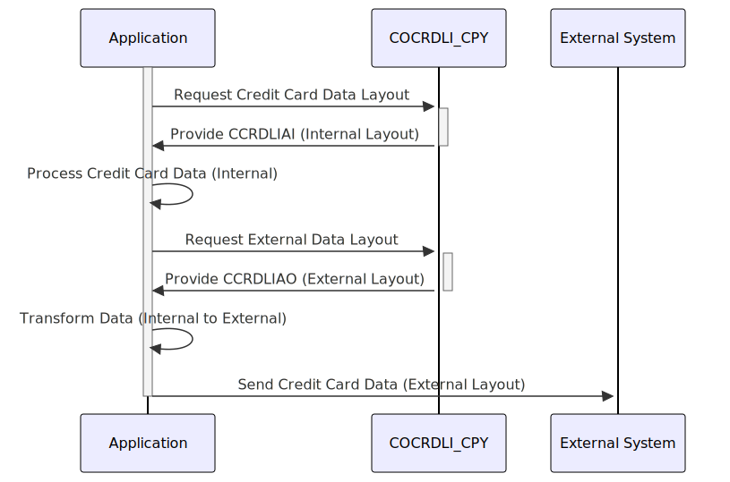

Gerado em: 1º de outubro de 2024
Título do Documento: Layout de Dados de Cartão de Crédito (Entrada/Saída)
Descrição Resumida:
Este documento descreve a estrutura das informações do cartão de crédito usadas no sistema. Ele define dois layouts - um para uso interno (CCRDLIAI) e outro para comunicação externa (CCRDLIAO), garantindo consistência e segurança no tratamento de dados em diferentes partes do sistema e durante interações com entidades externas.
Histórias do Usuário:
Como Analista de Sistemas de Cartão de Crédito, preciso de um formato de dados padronizado para garantir o processamento contínuo das informações do cartão de crédito em nossos sistemas e durante a comunicação com outras partes. Este formato deve representar com precisão os detalhes da transação, informações da conta e dados do cartão, ao mesmo tempo em que segue os padrões de segurança para lidar com informações confidenciais.
Épico Relacionado:
3 - Gestão de Cartão de Crédito
Requisitos Funcionais:
- Definição da Estrutura de Dados: Definir uma estrutura de dados clara e consistente para informações de cartão de crédito, incluindo campos para detalhes da transação, dados da conta, números de cartão, status e mensagens.
- Layout Interno (CCRDLIAI):
- Definir o layout para armazenamento interno e processamento de informações de cartão de crédito.
- Este layout deve ser otimizado para tratamento eficiente de dados dentro do sistema.
- Layout Externo (CCRDLIAO):
- Definir o layout para troca de informações de cartão de crédito com sistemas externos ou exibição para usuários.
- Este layout pode diferir do layout interno para atender a requisitos externos ou para mascarar dados confidenciais.
- Mapeamento de Dados: Estabelecer regras claras de mapeamento entre os layouts interno e externo para garantir a consistência dos dados durante a transformação.
Requisitos Não Funcionais:
- Segurança:
- Implementar métodos robustos de criptografia para proteger informações confidenciais do cartão de crédito durante o armazenamento e transmissão.
- Impor medidas rígidas de controle de acesso para restringir o acesso não autorizado aos dados do cartão de crédito.
- Desempenho:
- As estruturas de dados e regras de mapeamento devem ser projetadas para minimizar a sobrecarga de processamento e garantir o tratamento eficiente dos dados.
- Manutenibilidade:
- O código deve ser bem documentado e modular para facilitar a manutenção e atualizações.
- Conformidade:
- Seguir os padrões do setor (por exemplo, PCI DSS) para lidar e armazenar dados confidenciais do titular do cartão.
Critérios de Aceitação:
- As estruturas de dados definidas (CCRDLIAI e CCRDLIAO) devem representar com precisão todas as informações necessárias do cartão de crédito.
- As regras de mapeamento entre layouts interno e externo devem garantir a consistência dos dados.
- A implementação deve estar em conformidade com os padrões de segurança para lidar com dados confidenciais do titular do cartão.
- O sistema deve ser capaz de processar informações de cartão de crédito de forma eficiente, sem degradação significativa do desempenho.
Melhorias de Código:
- Implementar verificações de validação de dados para cada campo nas estruturas de dados para garantir a integridade dos dados.
- Adicionar mecanismos de tratamento de erros para gerenciar com elegância quaisquer problemas durante a transformação ou processamento de dados.
- Fornecer documentação abrangente para as estruturas de dados, regras de mapeamento e quaisquer módulos de código associados.
Melhorias de Segurança:
- Implementar técnicas de mascaramento de dados ou tokenização para aumentar ainda mais a segurança, substituindo os dados confidenciais do titular do cartão por substitutos não confidenciais.
- Manter logs abrangentes de todos os acessos, modificações e transmissões de dados de cartão de crédito para fins de auditoria e monitoramento de segurança.
Diagrama Conceitual:

–Made by “Smart Engineering” (by Compass.UOL)–